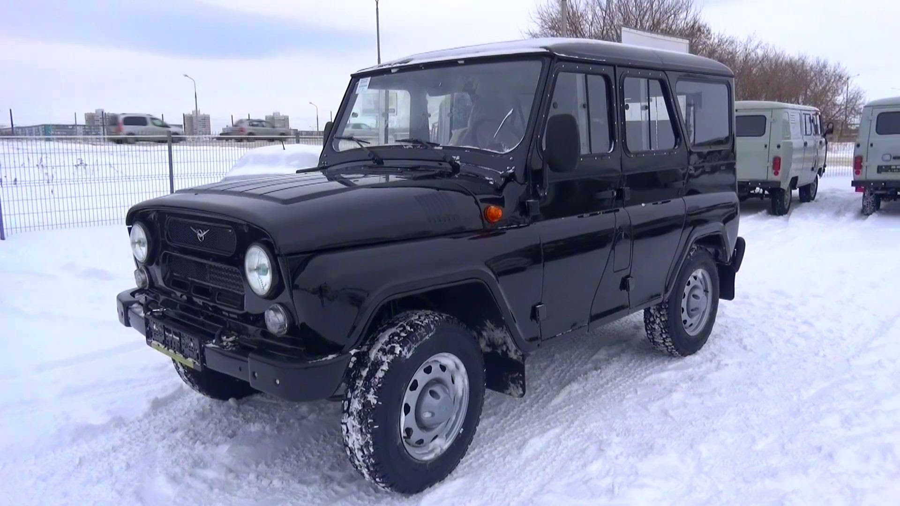
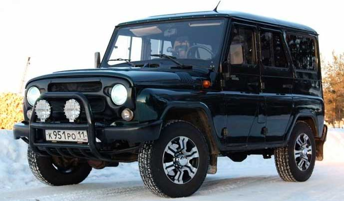
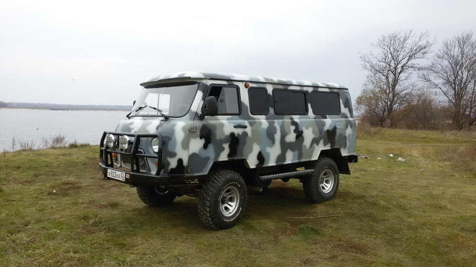

Модель УАЗ 3163 (Patriot) – это полноприводный автомобиль повышенной проходимости из класса внедорожников, который был впервые представлен российской автомобильной компанией УАЗ в августе 2005 года. Автомобиль внешне очень отличается от своего предшественника – модели УАЗ 3162, производство которой было прекращено в 2005 году. Лишь отдалённые черты в дизайне напоминают их родственную связь. Внедорожник обладает современной динамичной внешностью. Кузов у Patriot 5-дверный цельнометаллический типа универсал. Подробнее »
Модель УАЗ 3163 (Patriot) – это полноприводный автомобиль повышенной проходимости из класса внедорожников, который был впервые представлен российской автомобильной компанией УАЗ в августе 2005 года. Автомобиль внешне очень отличается от своего предшественника – модели УАЗ 3162, производство которой было прекращено в 2005 году. Лишь отдалённые черты в дизайне напоминают их родственную связь. Внедорожник обладает современной динамичной внешностью. Кузов у Patriot 5-дверный цельнометаллический типа универсал. Подробнее »


УАЗ Хантер УАЗ Хантер (УАЗ-315195) — легковой автомобиль повышенной проходимости (вседорожник) для эксплуатации на дорогах всех категорий, а также по пересечённой местности. УАЗ «Хантер» представляет собой дальнейшее развитие второго поколения ульяновских вседорожников УАЗ-469 и УАЗ-3151Подробнее »


Автомобиль УАЗ 2206 – это микроавтобус повышенной проходимости, который впервые представила российская автомобильная компания УАЗ (Ульяновский Автомобильный Завод) в 1985 году. Его основное предназначение было перевозка пассажиров, но также мог быть использован и для транспортировки грузов.Подробнее »